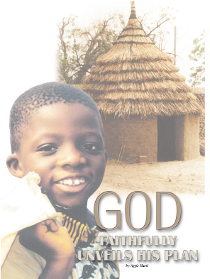

| << | 上一層 | >> |
神沒有忘記 Aina to Aggie (阿吉雅：一個真實的故事)

那是在1921年。一對叫大衛．弗拉德和斯蔚夫婦（David and Svea Flood），帶著他們兩歲的兒子從瑞典來到非洲的心臟，當時還稱作比屬剛果(Belgian Congo)(今日的Zaire)的地方。他們遇見了同樣來自北歐斯堪迪納維亞地區(Scandinavian)的亞埃瑞克森夫婦（Ericksons）。他們四人一同尋求神的旨意。那是溫柔、奉獻和犧牲的年代，他們感到主要帶領他們從一個宣教中心出去，將福音傳至邊遠地區。這是在信心裡邁出的巨大一步。
他們來到一個名叫恩道樂拉（N'dolera）的村莊，可是遭到了酋長的斷然拒絕，不准許他們進入他的領地，害怕他們的到來使人們遠離本地自己的神。兩對夫婦選擇在半里之外的山坡上蓋起了一間小茅屋。
他們為屬靈的突破而祈求，但是卻一無所獲。唯一與他們有接觸的是一個小男孩，他獲准一周兩次賣雞和雞蛋給他們。身高只有四英尺八英吋的小個女子斯蔚．弗拉德（Svea Flood）心想，既然她只能和這一個非洲人交談，她就要把他領向基督。事實上，她真的成功了。但是除此之外，再沒有什麼令人鼓舞的事情了。
與此同時，瘧疾卻將這個小小團體裡的成員一一擊倒。到了一個時候，亞埃瑞克森一家相信他們受的苦已經夠多了，他們要回到宣教中心去。大衛和斯蔚則決定孤單地繼續留在恩道樂拉（N'dolera）附近。
雪上加霜的是，斯蔚發現她在這原始荒野裡懷孕了。臨盆時村裡酋長的心軟了下來，允許一個接生婆來幫助她。
一個小女孩出生了，他們為她命名為艾娜（Aina） [註：Aina名字源於北歐意思是：Forever永遠；若在非洲則解作：困難的生產]。然而斯蔚因數度患瘧疾而身體虛弱，這次生產更使她耗盡了最後一點精力，成了她致命的一擊，她在嬰兒出生後只熬過了17天。
大衛的心裡起了驟變。他挖了一個粗糙的山洞，埋葬了他27歲的妻子，帶著他的孩子們回到山下的宣教中心。他一面把新生的嬰兒艾娜（Aina）交給亞埃瑞克森夫婦(Ericksons)，一面吼叫著，「我現在就回瑞典去！我失去了妻子，我也明明是照顧不了這個嬰兒。神毀了我的生活！」
留下了初生的女兒，他帶著兩歲半的孩子直往回國去之港口，不僅拒絕了神對他的呼召，也拒絕了神自己。
八個月之內，亞埃瑞克森夫婦二人都因染上不知名的疾病而相繼離世(有說是被當地土人所毒害)，那個嬰孩則轉交到某個美國宣教士的家裡，他們把她的瑞典名字改成了「阿吉雅」（Aggie）。[Aggie的希臘字根意思是：Good好]
最後，當她三歲時，他們把她帶到了美國。這一家美國人深深地喜愛這個小女孩，他們擔心如果他們回非洲去的話，法律上的障礙可能迫使他們與她分離，所以他們決定不離開他們的國家，也將宣教的服事轉為牧養。
阿吉雅就是這樣在南達科塔(South Dakota)長大的。長成青年女子後，她就讀於明尼阿波利斯的中北聖經學院(North Central Bible College in Minneapolis)，在那裡結識了青年男子杜威．赫斯特（Dewey Hurst），並與他結婚。
年復一年，赫斯特夫婦享受著他們服事的成果。阿吉雅首先生下一個女兒，後來又生了一個兒子。當她的丈夫前往西雅圖地區、就任一所聖經學院的校長時，她發現那一帶有著極其濃厚的斯堪迪納維亞(Scandinavian)傳統。
一天，一份瑞典的宗教雜誌出現在她的信箱裡。她既不知道是誰寄來，也不認得裡面的任何一個字。在她不經意翻閱的時候，突然裡面的一幅照片令她瞠目驚舌：原始的背景、一個十字架、十字架上刻著一個名字--斯蔚．弗拉德(SVEA FLOOD)[就是她過身母親的名字]。
阿吉雅跳上吉普車，飛快地奔向學院裡一位教員的家，她知道他能夠翻譯那篇文章。
「它講什麼？」她急切地問道。
教員概述著那個故事：很久以前，宣教士們來到恩道樂拉（N'dolera）……一個白人嬰兒的出生……年輕母親的去世……一個非洲小男孩被領向基督…… 以及所有的白人離開之後，男孩長大了，最後說服酋長允許他在村子裡建起了一座學校。文章講到他最後如何為基督贏得了他的所有學生，甚至連酋長也成了基督徒。今天，那個村子裡共有六百名基督徒……完全因著大衛和斯蔚的犧牲。
赫斯特夫婦結婚二十五週年紀念的時候，學院送給他們的禮物是前往瑞典一趟的假期。阿吉雅在那裡找到了已經風蠟殘年的親生父親大衛．弗拉德(David Flood)。原來他又結婚了，並多了四個兒女，而且常常將生命揮霍在酒精裡。他剛剛經歷了一次中風，更糟的是，他在家裡立下一條規矩：「不許提神的名字，因為神奪走了我的一切。」
與同父異母的兄弟姐妹會面之後，阿吉雅提出要見見父親的事，其他人都猶豫了：
「你可以和他談談，」他們回答說，「雖然他現在病得很厲害，可是你要知道，每次一聽見神的名字，他就火冒三丈。」
阿吉雅沒有知難而退，她走進骯髒的公寓，踏過滿地的酒瓶，來到正躺在亂七八糟的床上的73歲的老人身邊：
「爸爸？」她試著呼喚著。
他轉過臉，哭了起來。
「艾娜，」他說道，「我從來不想把你送掉。」
「沒什麼，爸爸。」她說，將他輕輕摟在懷裡，「神照顧我。」
老人一下子倔強起來，他的眼淚也止住了：
「神把我們都忘記了，都是因為他，我們今天才活成這個樣子。」
他的臉再次轉向牆壁。
阿吉雅並不放棄，她撫摸著他的臉，繼續說，
「我有一個小故事，一個真實的小故事，要說給你聽。你沒有白白去非洲，媽媽也沒有白白死在那裡。你們為神贏得的小男孩已經長大了，他為基督贏得了全村。今天，因著你們生命中對神 有過的忠心，六百個非洲人在事奉主……」
「爸爸，耶穌愛你，他從來沒有恨過你。」
老人轉過神來，望著女兒的眼睛。他的身體開始放鬆下來，他開始講話。就在那個下午，他又回到他棄絕了好幾十年的神那裡。後來的幾天，父女一起享受著溫馨的美好時光。
阿吉雅和丈夫很快就不得不回美國了。幾個星期之後，大衛．弗拉德也回到他要到永恆的家。
幾年後，赫斯特夫婦到倫敦出席一個大型的福音派聚會。會上一位來自扎伊爾Zaire(前比屬剛果former Belgian Congo）教會的代表，代表全國11萬受洗的信徒講話，介紹福音是怎樣傳遍整個國家的。
過後，阿吉雅迫不及待地問他是否聽說過大衛和斯蔚．弗拉德。
「是的，女士，」那人用法語回答，然後被翻譯成英語。
「我是斯蔚．弗拉德(Svea Flood)帶領信主的。我是在你出生之前，為你父母送食物的男孩。直到今天，你母親的墓和對她的記憶仍是我們的驕傲。」
他流著淚久久地擁抱她，然後繼續說，
「你一定要去非洲看看，因為你媽媽是我們歷史中最著名的人。」
阿吉雅．赫斯特和丈夫果然成行，他們受到村民們的熱情歡迎，她甚至見到許多年前她爸爸找來用掛藍將她背下山的老人。最引人注目的時刻是在牧師的引導下，她來到親生母親的十字架前，跪在土地上祈求與感恩。
那天，牧師後來在教會裡讀約翰福音12章24節：
「我實實在在地告訴你們，一粒麥子不落在地裡死了，仍舊是一粒。若是死了，就結出許多子粒來。」
Excerpts from: Aggie Hurst, Aggie: The Inspiring Story of A Girl Without A Country[Springfield, MO: Gospel Publishing House, 1986].) Previously publishedunder the title, "One Witness"), just after her death in 1981.
2007年9月6日 本文由Amy 提供
《耶大雅聖經園地》http://www.konline.org/biblestudy/
Email Address: webmaster@konline.org
耶大雅（Jedaiah）編輯
2
| << | 上一層 | >> |